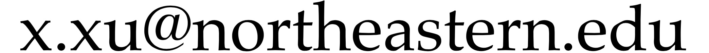

|
Xiaolin Xu (徐啸林)
Associate Professor |
I am seeking highly motivated students with strong research interests in security, privacy-preserving computing, machine learning, computer architecture, FPGA, and IoT. Full financial support will be offered.
If you are interested in applying, please review this note and email me with your CV, transcripts, and any other relevant documents.
I am chairing the New England Hardware Security Day (NEHWS) 2025, which brings together many students, researchers, practitioners, and industry partners in the field of hardware security to share their work and foster new ideas. Please consider submitting your work for presentation at NEHWS. We are looking for announcements, research talks, and posters.
Short Bio
I joined Northeastern University in Fall 2020. I earned my doctoral degree in Electrical and Computer Engineering from UMass Amherst and subsequently worked as a Post-Doctoral Fellow at the Florida Institute for Cybersecurity Research. My M.S. and B.E. degrees are from the University of Electronic Science and Technology of China.
What's New
06/2025 DAC Under-40 Innovators Award!
06/2025 Awarded (early) Tenure at Northeastern!
05/2023 Congrats to Dr. Shijin Duan on officially earning the title!
05/2025 Two papers accepted for publication in ICML’25.
02/2025 Two papers accepted for publication in DAC’25.
02/2025 One paper accepted for publication in CPAL’25.
01/2025 Xiaocheng joined our group as a PhD student, welcome!
10/2024 One paper accepted for publication in NDSS’25.
09/2024 Two papers accepted for publication in NeurIPS’24.
08/2024 Yukui joined Binghamton ECE as an Assistant Professor, Congrats!
07/2024 One paper accepted for publication in ICCAD’24.
06/2024 Panelist of Early Career Workshop at DAC’24.
06/2024 One paper accepted for publication in VL/HCC’24.
04/2024 Northeastern Tier 1 Award.
02/2024 One paper accepted for publication in DAC’24.
02/2024 One paper accepted for publication in tinyML’24.
01/2024 One paper accepted for publication in ICLR’24.
01/2024 Jiaxing joined our group as a PhD student, welcome!
11/2023 One paper accepted for publication in ASPLOS’24.
09/2023 One paper accepted for publication in NeurIPS’23.
08/2023 Congrats to Dr. Yukui Luo on officially earning the title!
Contact
Email: 
Office: 424 Dana Research Center